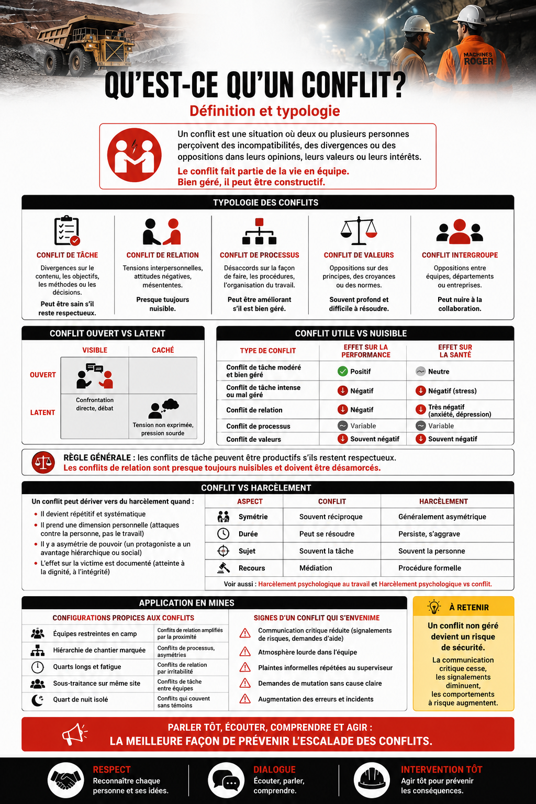
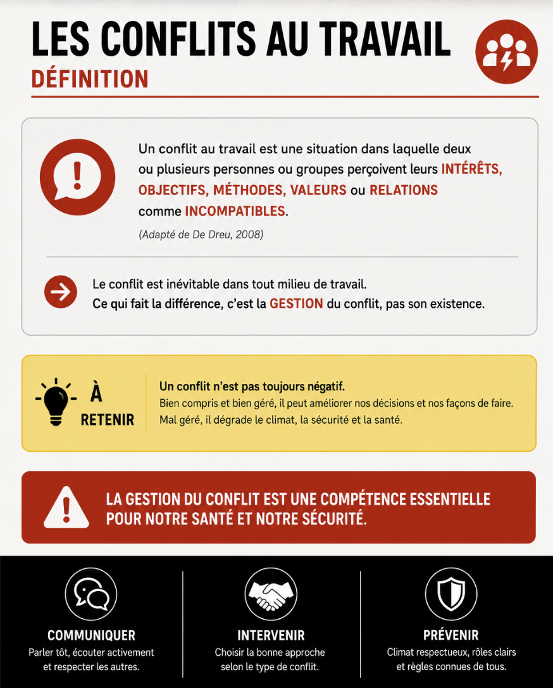
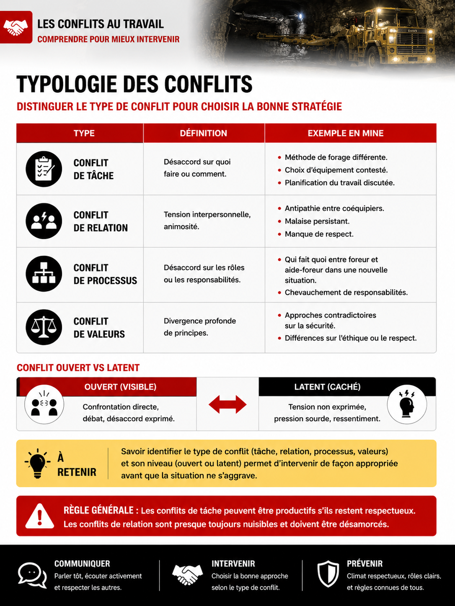
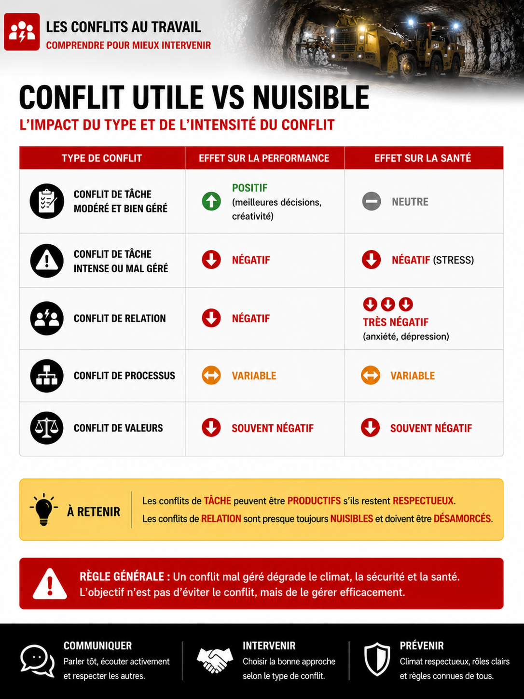
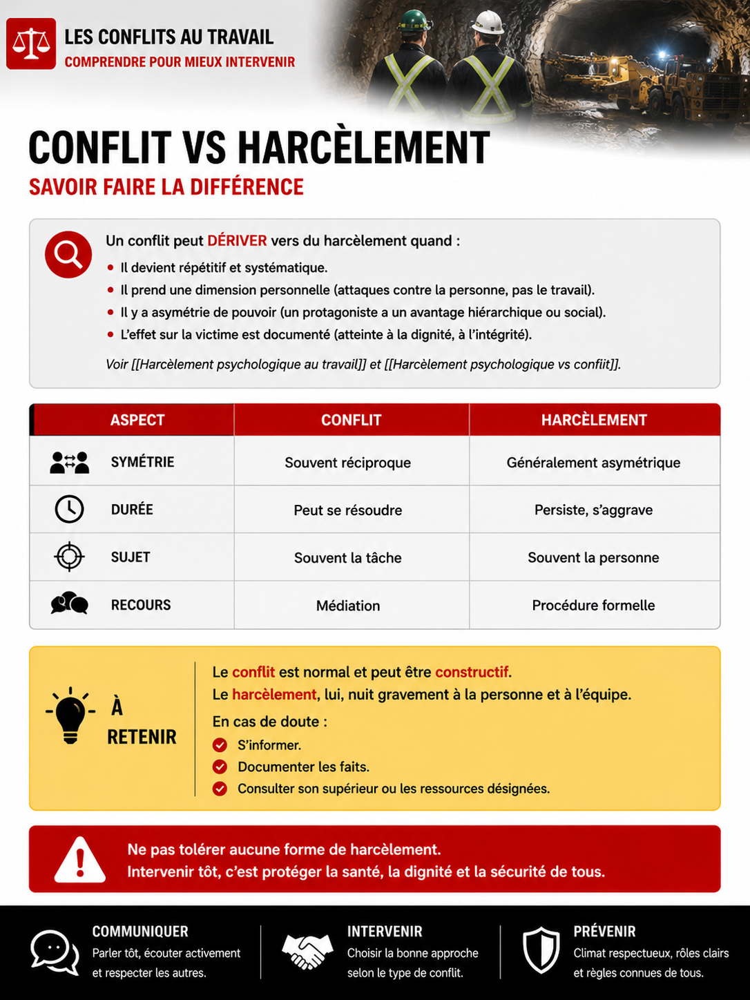
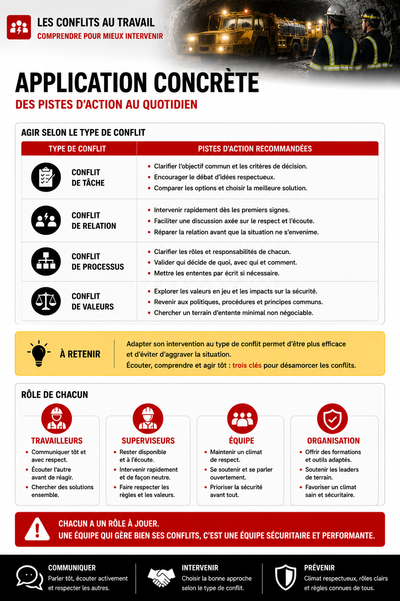

Définition et typologie des conflits au travail
Table des matières

Toucher l'image pour l'agrandirL'essentiel : Un conflit au travail, c'est une opposition entre personnes ou groupes sur des objectifs, des méthodes, des valeurs ou des relations. Tous les conflits ne sont pas négatifs : un conflit de tâche bien géré peut améliorer une décision. Mais un conflit mal géré dégrade le climat, la sécurité et la santé. Distinguer les types de conflits permet de choisir la bonne stratégie d'intervention.

Toucher l'image pour l'agrandirDéfinition
Conflit au travail : situation dans laquelle deux ou plusieurs personnes ou groupes perçoivent leurs intérêts, objectifs, méthodes, valeurs ou relations comme incompatibles (adapté de De Dreu, 2008).
Le conflit est inévitable dans tout milieu de travail. Ce qui fait la différence, c'est la gestion du conflit, pas son existence.
Typologie

Toucher l'image pour l'agrandir| Type | Définition | Exemple en mine |
|---|---|---|
| Conflit de tâche | Désaccord sur quoi faire ou comment | Méthode de forage, choix d'équipement, planification |
| Conflit de relation | Tension interpersonnelle, animosité | Antipathie entre coéquipiers, malaise persistant |
| Conflit de processus | Désaccord sur les rôles ou les responsabilités | Qui fait quoi entre foreur et aide-foreur dans une nouvelle situation |
| Conflit de valeurs | Divergence profonde de principes | Approches contradictoires sur la sécurité, l'éthique, le respect |
Conflit ouvert vs latent
| Visible | Caché | |
|---|---|---|
| Ouvert | Confrontation directe, débat | |
| Latent | Tension non exprimée, pression sourde |
Conflit utile vs nuisible

Toucher l'image pour l'agrandir| Type | Effet sur la performance | Effet sur la santé |
|---|---|---|
| Conflit de tâche modéré et bien géré | Positif (meilleures décisions, créativité) | Neutre |
| Conflit de tâche intense ou mal géré | Négatif | Négatif (stress) |
| Conflit de relation | Négatif | Très négatif (anxiété, dépression) |
| Conflit de processus | Variable | Variable |
| Conflit de valeurs | Souvent négatif | Souvent négatif |
Règle générale : les conflits de tâche peuvent être productifs s'ils restent respectueux. Les conflits de relation sont presque toujours nuisibles et doivent être désamorcés.
Conflit vs harcèlement

Toucher l'image pour l'agrandirUn conflit peut dériver vers du harcèlement quand
- Il devient répétitif et systématique
- Il prend une dimension personnelle (attaques contre la personne, pas le travail)
- Il y a asymétrie de pouvoir (un protagoniste a un avantage hiérarchique ou social)
- L'effet sur la victime est documenté (atteinte à la dignité, à l'intégrité)
| Aspect | Conflit | Harcèlement |
|---|---|---|
| Symétrie | Souvent réciproque | Généralement asymétrique |
| Durée | Peut se résoudre | Persiste, s'aggrave |
| Sujet | Souvent la tâche | Souvent la personne |
| Recours | Médiation | Procédure formelle |
Voir Harcèlement psychologique au travail et Harcèlement psychologique vs conflit.

Toucher l'image pour l'agrandirConfigurations propices aux conflits en mine
| Configuration | Type de conflit fréquent |
|---|---|
| Équipes restreintes en camp | Conflits de relation amplifiés par la proximité |
| Hiérarchie de chantier marquée | Conflits de processus, asymétries |
| Quarts longs et fatigue | Conflits de relation par irritabilité |
| Sous-traitance sur même site | Conflits de tâche entre équipes |
| Quart de nuit isolé | Conflits qui couvent sans témoins |
Signes d'un conflit qui s'envenime
- Communication critique réduite (signalements de risques, demandes d'aide)
- Atmosphère lourde dans l'équipe
- Plaintes informelles répétées au superviseur
- Demandes de mutation sans cause claire
- Augmentation des erreurs et incidents
Pourquoi gérer rapidement : un conflit non géré devient un risque de sécurité. La communication critique cesse, les signalements diminuent, les comportements à risque augmentent.
Documents et outils
| Document | Type | Source |
|---|---|---|
| Notes de cours SST1010, module 10 | Synthèse | UQAM |
| Guide CCHST sur la gestion des conflits | cchst.ca | |
| Modèle Thomas-Kilmann (styles de gestion de conflit) | Cadre | Outils RH |
| Programme de médiation interne | À élaborer | Conseiller SST |
Voir le centre de ressources : 📁 Documents et outils.
Pour aller plus loin
Références
- De Dreu, C. K. W. (2008). The virtue and vice of workplace conflict. Journal of Organizational Behavior, 29, 5-18.
- Jehn, K. A. (1995). A multimethod examination of the benefits and detriments of intragroup conflict. Administrative Science Quarterly, 40(2), 256-282.
Articles wiki connexes